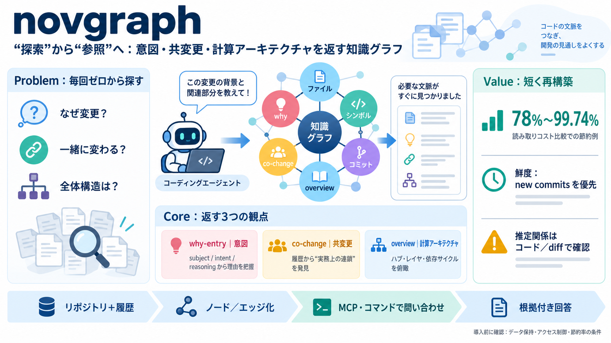

5 agent architecture scenarios: assess MCP vs A2A
spec is catching up around OAuth 2.1, but until authorization is required by default, treat MCP as a convenience layer f…

コーディングエージェントがリポジトリを調べるたびに必要な全体像を、知識グラフ（knowledge graph）で“意図・共変更・計算アーキテクチャ”まで含めて返します。
エージェントはファイル読解や検索で進めますが、「なぜ変更したのか」「一緒に変わる関係」「システム全体の構造」を毎回復元できません。
novgraphは、リポジトリのファイル＋シンボルだけでなく、コミット履歴の意図（why）、共変更（co-change）、全体解析のアーキテクチャをノード／エッジ化してMCPやコマンド経由で問い合わせます。
コミットごとの“変更理由”がknowledge graphに保存されるため、エージェントはdiff追跡だけでは復元できない設計意図や修正方針を参照できます。
connectionsは履歴ベースのco-changeを含み、import/callのような静的関係だけでは見落とす“実務上の連鎖”を掴めます。
overviewは、グラフ全体から負荷の大きいハブ、デファクトなサブシステム、レイヤリング、依存サイクルなどを導出します。
78%〜99.74%の節約はモデル推定ではなく、「回答が引用するファイルを読むコスト」との差として報告されています。
更新中の新コミットでは、古いインデックスより優先順位を落とすなど“鮮度”を意識した運用が明示されています。
返る情報には推定（inferred edges）が混ざり得ます。whyの記録品質や推論の精度に依存するため、最終判断はdiffや実装確認とセットで行うべきです。
クライアント（Python製）はローカル要件を軽くし、インデクシングや検索はホスト側が担う構成です。情報管理（保存期間・アクセス制御・監査）は組織要件に合わせて確認が必要です。
novgraphは、エージェントの調査負担を「読む」から「問い合わせる」へ寄せ、意図・関係・構造を短く再構築します。一方で推定やデータ品質の影響は残るため、根拠確認と併用して使うのが安全です。
spec is catching up around OAuth 2.1, but until authorization is required by default, treat MCP as a convenience layer f…
## Scene Memory for Robots: Mapping What They See, Reasoning About What Changed – Neo4j @ WAD2026 From Apple Health to …
-- Listen Share Knowledge graphs have evolved from theoretical concepts to powerful practical tools that revolutioniz…
## Key Features ### Knowledge Graph (Neo4j 2026.x) Native VECTOR type with ANN semantic search Fulltext BM25 indexes…
This type of retrieval would be impossible in vector stores and difficult in other non-graph databases due to the absenc…